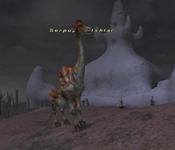

Level 75 reference · Zenith rules
|
Job: Notorious Monster |
 |

|
Zone |
Level |
Drops |
Steal |
Spawns |
Notes |
|
19-20 |
2 |
L, S, Sc | |||
|
HP = Detects Low HP; M = Detects Magic; Sc = Follows by Scent; T(S) = True-sight; T(H) = True-hearing JA = Detects job abilities; WS = Detects weaponskills; Z(D) = Asleep in Daytime; Z(N) = Asleep at Nighttime | |||||

Notes:
- Lottery Spawn from the Wild Dhalmel
- Can load at either H-8 to I-8, or H-6.
- Killable by: 2 characters level 15; solo at level 25
Adapted from Eden Wiki: Serpopard Ishtar · Contributors and history · CC BY-SA 4.0. Revision 46615. Layout, links and optional background text adapted for Zenith.